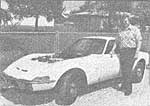
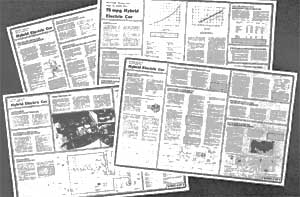

Six months ago, we published an article about a 75-mile-per-gallon hybrid electric automobile that a fellow out in Springdale, Arkansas built-in just a month's worth of spare time-for a scant $1,500.
The car's designer, Dave Arthurs, not only developed the vehicle using standard off-the-shelf parts and reasonably priced military surplus, but also fabricated a motor controller (which, up to this point, had been the "joker in the deck" for many electric vehicle enthusiasts . . . because of the typically high cost and low efficiency of such units). Furthermore, Mr. Arthurs' controller was made from $25 worth of junkyard parts, was a cinch to build, and-better still-consumed a minimum of precious energy while in operation.
What's more, Dave was willing to share his automotive "discovery" ... by first permitting Mother Earth News to report on what he'd done, then by working with this magazine to develop a set of plans to, help other folks build their own hybrid electric cars!
And build they did. To date, thousands of folks have ordered plans so that they, too, could take advantage of the econ omy that David Arthurs enjoys. (His hybrid electric auto uses a fuel-sipping 5horsepower generator drive engine, and can attain speeds of up to 90 MPH!)
But Dave certainly didn't stop with his first prototype. Even before roughing out our initial plan schematics, the Arkansas electrical engineer had incorporated a few additional features into his car (including a home charging circuit, a more powerful-but still economical-gasoline engine, and increased generator output) which made the hybrid even more practical ... especially for extended use. He also figured out a way to utilize the heat given off from the small generator drive engine to supply his car's defroster and wintertime climate control system, and give his engine self-starting capability by temporarily routing current backward through the generator during initial start-up!
The ingenious inventor has done a lot of additional research, too. While scouting out an efficient, lightweight battery, for instance, he uncovered several good sources of such power-packs, as well as additional access information for drive motors, generators, and assorted parts and components . . . all of which-along with the design innovations-Dave supplied to Mother Earth News for her plans package.
However, the best news may be yet to come: Mr. Arthurs has informed the editors and research folks here at Mother Earth News that he's putting together yet another hybrid vehicle ... this time a VW transporter bus, which he plans to use as a delivery vehicle for his small electronics and stereo shop. Although the mini-van isn't quite finished, David reports that it "works like a charm" so far . . . and-after he completes the final cosmetic touches-he wants to jump right into his next effort: a hybrid electric boat!
Needless to say, Mother Earth News will be right on top of both projects, and as soon as possible (maybe even in the next issue) we'll be showing you the latest in hybrid electric transportation from Springdale, Arkansas!
|
 Here's the latest news on the hottest fuel-efficient transportation idea around! |
 |
|